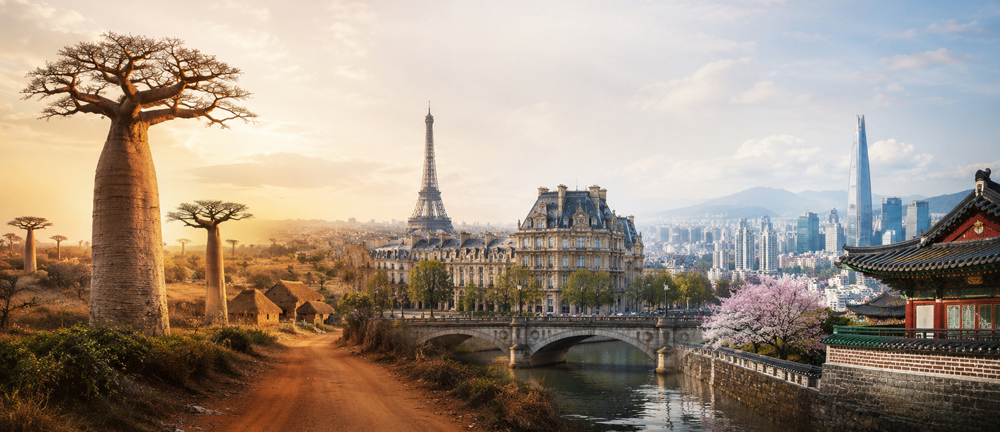
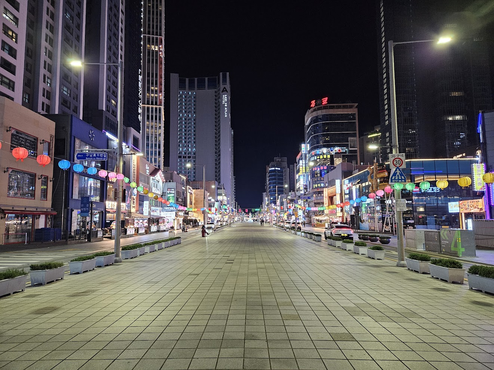
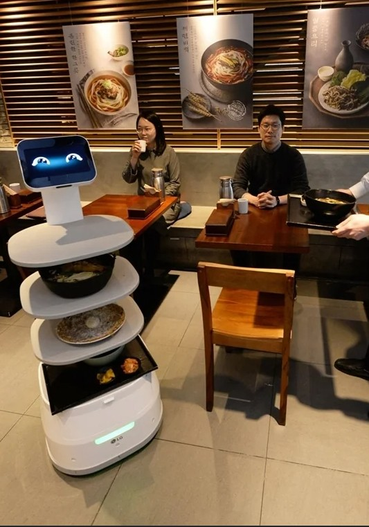
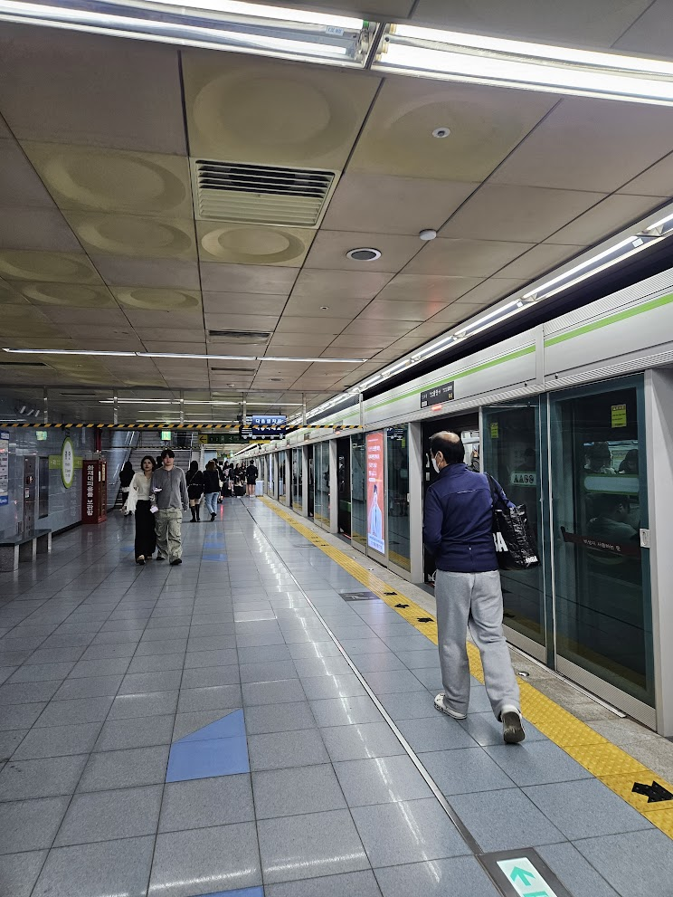
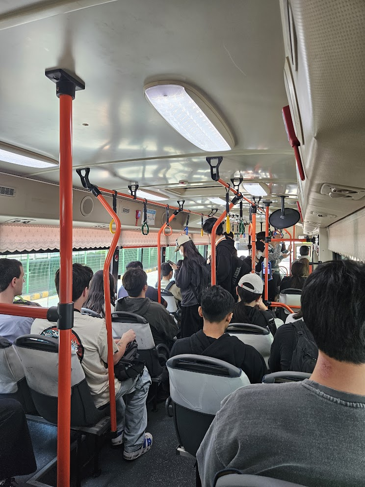
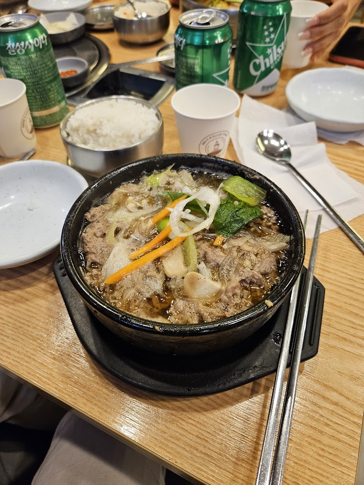
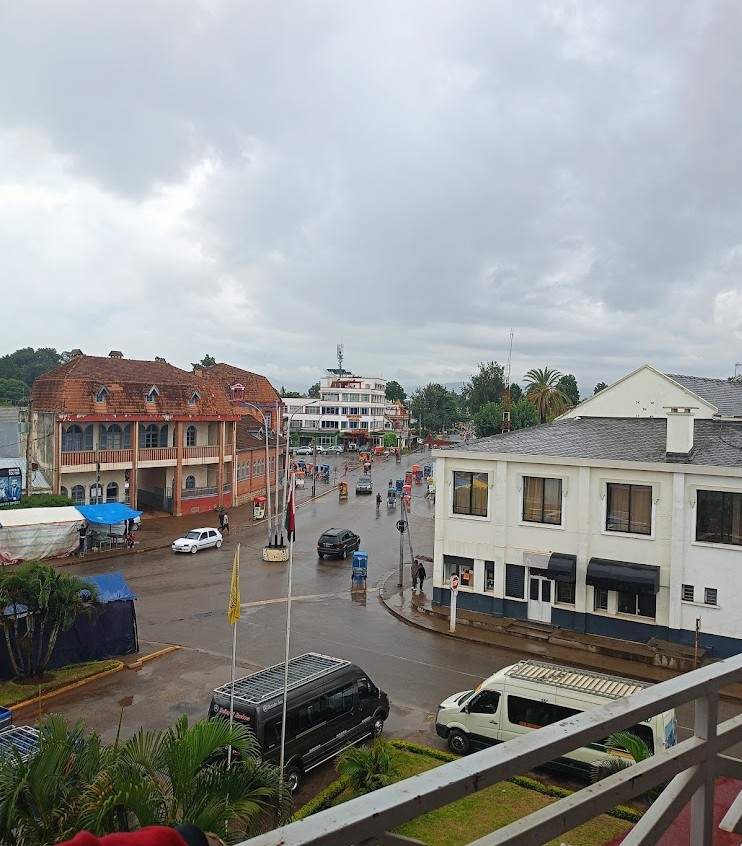
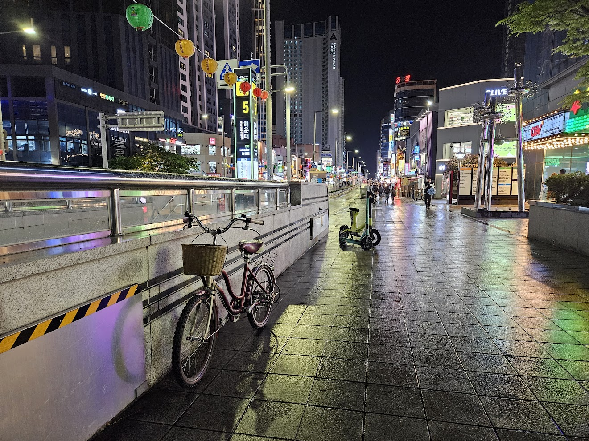
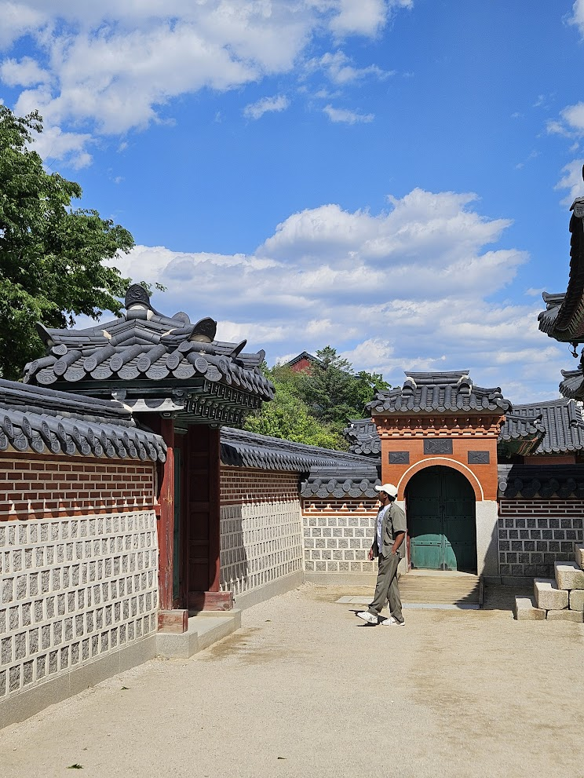

From Madagascar to France to Korea
Seeing Korea Through Three Cultures
Travelling to South Korea first started as part of our interactive web documentary project. The goal was to collect images, sounds, stories, and real-life moments that could help us build a more immersive experience. But once there, the trip quickly became more than just a school project. It also became an opportunity to discover a new country, a new culture, and a very different way of living.
South Korea is often seen from the outside through K-pop, K-dramas, beauty products, or advanced technology. These images are not wrong, but they do not show everything. Daily life tells another story: the clean streets, the organized metro, the respect for elderly people, the food culture, the architecture, and the feeling of safety in public spaces. These small details say a lot about how a society works.
What makes this experience even more interesting is the comparison with two other cultural backgrounds: Madagascar and France. As someone originally from Madagascar and currently studying in France as part of a double degree program, I naturally experienced South Korea through these two perspectives. Madagascar has shaped my understanding of community, daily life, and social interactions, while France has influenced the way I see structure, history, and urban identity. Seen through these different cultural lenses, Korea does not appear only as a travel destination. It becomes a way to understand how different cultures can shape the same everyday actions in completely different ways: moving, eating, respecting others, using technology, and sharing public spaces.
Cleanliness - without a bin in sight
One of the most surprising aspects of South Korea is the cleanliness of public spaces. In many streets, it is difficult to find public bins. Yet, there is almost no garbage on the ground. This contrast is impressive because it shows that cleanliness is not only about infrastructure. It is also about collective behavior.
In France, waste sorting exists and is part of daily life. There are different bins for glass, paper, plastic, and general waste. However, in South Korea, the system feels even more advanced and more precise. Waste sorting is not just encouraged; it seems to be a serious part of urban discipline. People are expected to separate waste carefully, and this expectation shapes public behavior.
In Madagascar, the relationship with waste is very different. In many places, everything can end up in the same bin, and waste sorting is not yet strongly integrated into everyday habits. In some streets, especially in urban areas, garbage can become visible very quickly. This does not mean that people do not care about cleanliness. It shows that public systems, education, infrastructure, and cultural habits all influence the way a society manages waste.
Korea gives the impression that cleanliness is a shared responsibility. The city does not only rely on bins or cleaning services. It relies on people understanding that public space belongs to everyone.

A typical bin-less but pristine street in Seoul.
Technology in Everyday Life
Technology is another strong part of the Korean experience. In South Korea, technology does not feel like something separate from daily life. It is everywhere: in transport, payment systems, shops, restaurants, streets, and public services. Everything seems designed to be fast, practical, and efficient.
Compared with Madagascar, the contrast is clear. Technology exists in Madagascar, of course, but it is not always as accessible, stable, or integrated into daily systems. Internet connection, digital services, transport apps, and modern public infrastructure are still developing. In France, technology is much more present and functional, but Korea often feels one step ahead in terms of speed, convenience, and integration.
The difference is not only about having advanced devices. It is about how technology becomes part of the rhythm of society. In Korea, technology supports a lifestyle where people move quickly, pay quickly, communicate quickly, and access services quickly. It creates a feeling of modernity that is not only visual, but practical.

High-tech infrastructure seamlessly integrated into daily life.
Respect, Politeness, and Social Codes
Every culture has its own form of respect. Madagascar has strong values of family, elders, and community. France has its own codes of politeness, such as greetings, formal language, and respect for personal space. Korea also has its own system, but it feels especially visible in daily interactions.
In South Korea, politeness often appears through gestures. Bowing, thanking, speaking softly, and showing attention to others are common parts of social life. Respect for older people is particularly important. This can be seen not only in language and behavior, but also in public transport and public spaces.
For example, in the metro, there are seats reserved for elderly people and pregnant women. What is remarkable is that these seats can remain empty even when the train is crowded. People do not simply see them as available seats. They see them as reserved spaces with a clear social meaning.
In France and Madagascar, elderly people and pregnant women are also respected, but the system does not always feel as strict or as visible. Korea makes this respect part of the design of public life. It is not only a moral value; it is built into the way people use space.
Traditional and modern intersections of respect.
Public Transport
Public transport reveals a lot about a country. In South Korea, the metro feels clean, modern, organized, and efficient. It gives the impression of a city designed for movement. Stations are clear, trains are well maintained, and the experience feels structured.
In Paris, the metro has a different identity. It is older, sometimes less clean, and often crowded, but it also has a strong historical and aesthetic character. The Paris metro is almost part of the city’s personality. It feels classic, recognizable, and deeply connected to the image of Paris.
In Madagascar, public transport is very different again. The classic bus or taxi-be represents another rhythm of life. It is more informal, more crowded, and less predictable, but also more connected to local daily reality. It reflects a society where movement depends more on adaptation than on strict organization.
Korea’s public transport shows a culture of efficiency. France’s public transport shows a mix of history and urban density. Madagascar’s public transport shows resilience, flexibility, and everyday creativity.

The quiet efficiency of the Seoul subway.

The quiet efficiency of the Seoul subway.
Food Culture and the Meaning of Spicy
Food is one of the easiest ways to understand a culture, and Korean food has a very strong identity. One of its most memorable characteristics is spiciness. In Korea, spicy food often feels normal, natural, and fully integrated into the dish. It is not always something added at the end. It can be part of the main flavor.
For someone who does not handle spicy food well, this can become a real challenge. Even a small amount of spice can feel intense when the definition of “spicy” is different from the local standard. Avoiding spicy food in Korea is possible, but not always easy. Sometimes, even dishes that look safe can contain a level of heat that feels unexpected.
In Madagascar, spicy food also exists, but it is often used differently. Spice is commonly served on the side, allowing each person to decide how much to add. This creates more flexibility. In France, spicy food is present, but it is not usually central to traditional French cuisine in the same way. French food often focuses more on sauces, herbs, butter, cheese, bread, and regional ingredients.
Korean food culture shows how taste can become part of national identity. Spiciness is not just a flavor. It is part of the energy of the meal.

A vibrant spread of traditional Korean dishes.
Architecture, Landscape, and the Shape of Modernity
South Korea’s landscape is visually striking because of its contrasts. Modern skyscrapers rise between mountains, while traditional architecture still remains visible in temples, palaces, and hanok-style buildings. The result is a country where modernity and tradition do not completely erase each other. They coexist.
In Paris, architecture has a very different harmony. Many buildings share the same Haussmannian style, with similar façades, balconies, rooftops, and proportions. This creates a strong visual identity. Paris feels consistent, historical, and elegant.
Madagascar has another architectural reality. Its landscapes are more diverse and less standardized. Red earth, hills, rural houses, tropical vegetation, and urban contrasts create a very different visual experience. Architecture often reflects local materials, economic realities, and the relationship between people and land.
Korea gives the impression of a country moving fast toward the future while still protecting fragments of its past. The skyline, the mountains, and the traditional roofs together create a powerful image of balance.
The striking contrast of ancient palaces and modern skyscrapers.

MADAGASCAR
Prices, Value, and Perspective
Money also changes the way a country is experienced. The value of the euro is high in both Madagascar and South Korea, but the feeling is not exactly the same. In Madagascar, the difference in currency value can create a strong contrast in purchasing power. In Korea, the euro can also feel powerful, but the cost of modern urban life, restaurants, transport, and shopping still requires attention.
This shows that price is not only about exchange rates. It is also about lifestyle. A country can feel affordable in one area and expensive in another. Korea can feel convenient and accessible in many daily situations, but it is also a highly developed country with a consumer culture that can encourage spending quickly.
Neon-lit streets offering countless dining options.
Safety and the Freedom to Move
Safety is one of the strongest contrasts between the three cultures. In Madagascar, especially in the capital or in certain urban areas, people often need to be careful. Going out at night can be risky, and even during the day, attention is necessary. Safety becomes part of daily decision-making.
In France, safety depends a lot on the city, the neighborhood, the time, and the situation. Paris, for example, can feel safe in some areas and uncomfortable in others. People learn to adapt their behavior depending on where they are.
South Korea often gives a different impression. Public spaces feel highly monitored, organized, and generally safe. Cameras are visible in many places, and people seem to trust the public environment more. The idea that a woman can walk alone at night with less fear says a lot about how safety shapes freedom.
Of course, no country is perfect, and no place is completely without risk. But the feeling of safety in Korea changes the way people move. It allows public life to continue late into the night with a different sense of confidence.

Safe and vibrant streets at any hour.
Conclusion: Seeing Korea Through Three Cultural Lenses
South Korea is often seen from the outside through K-pop, dramas, beauty products, technology, and futuristic cities. But daily life reveals something deeper. Clean streets without many bins, reserved seats that remain empty, spicy food as a cultural norm, modern transport, visible respect, and a strong feeling of safety all show how culture shapes behavior.
Seen through Madagascar and France, Korea becomes even more interesting. Madagascar highlights the importance of community, warmth, and adaptation. France shows the value of structure, history, and urban identity. Korea brings another lesson: the power of discipline, speed, technology, and collective responsibility.
These three cultures do not need to be ranked. They simply show that there are many ways to organize life. Each one has strengths, limits, and lessons. Korea, in this perspective, is not only a place visited during a trip. It becomes a way to understand how society, culture, and daily habits can completely change the way people see the world.
The next time Korea is described only through entertainment or technology, it may be worth looking closer at the small details of daily life. Sometimes, the clean street, the silent bow, the empty reserved seat, or the spicy meal says more about a culture than the most famous landmark.

A final look back at a transformative journey.